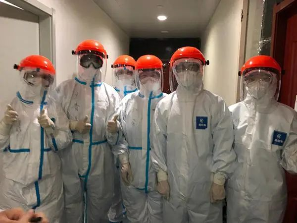

](http://mp.weixin.qq.com/s?__biz=MjM5MzI5NTU3MQ==&mid=2651584757&idx=1&sn=a5572bcc0bdaaed9ec4dea0282c51e0f&chksm=bd6665498a11ec5fc1242f13c3065e039cfc31047777dbdea5ff09cebc50adc6f3e98a790191&scene=21#wechat_redirect](http://mp.weixin.qq.com/s?__biz=MjM5MzI5NTU3MQ==&mid=2651584391&idx=1&sn=f8165806546650b36b3d5b4f6e0519b4&chksm=bd666a3b8a11e32dad3e267ab8ad644f242879ceaf5bbd7a9b13fbaaa67499bf8f545982b991&scene=21#wechat_redirect)[](http://mp.weixin.qq.com/s?__biz=MjM5MzI5NTU3MQ==&mid=2651584757&idx=1&sn=a5572bcc0bdaaed9ec4dea0282c51e0f&chksm=bd6665498a11ec5fc1242f13c3065e039cfc31047777dbdea5ff09cebc50adc6f3e98a790191&scene=21#wechat_redirect){kind=link}
中山医院赴武汉医疗队领队：不希望我的队员说太多豪言壮语
原文链接 备份链接 摘要：截至2月17日，全国已有3.2万余名医护人员支援湖北，支持湖北实现“应收尽收、应治尽治”。2月7日，其中一支医疗队的领队、复旦大学附属中山医院副院长朱畴文率领的136人队伍奉调入鄂，一天后接管了武汉大学人民医院东 …
澎湃新闻记者 李佳蔚

郁斐 制图
进驻武汉第一天，上海医疗队就知道，要治愈的不仅是患者身体，治愈出院也不会是服务终点。
时至今日，事实证明他们做得不赖。
2月7日，上海中山医院第四批医疗队进驻武汉大学人民医院东院，整建制接管两个病区（20和22病区，共80张床位），收治的均为重症及危重患者。
截至2月21日，短短两个星期全力救治，70余名重症以上患者已有30多人转为轻症，数量接近一半。
87岁音乐学院教授的沉默
刚到武汉时的情景，医疗队队员、消化科医生李锋清晰记得。
他们去的两个病区，原来是心内科病房，临时改建而成ICU，医疗队着手配齐了必需的医疗设施，分门别类归置。病房各区域的医疗、护理、用药等各项管理流程被重新建构。
护士长潘文彦有二十余年重症病房护理经验，她知道一个朴素的道理，“抢救时，医生说要插管，护士就要随时能拿出需要的东西，不能有一分一秒耽误”。
病房条件改善，但病人的状态令医护人员忧心忡忡。
有一名87岁的老先生，总是沉默地躺在病床上。每次李锋进去查房，都看到发给他的食物原封不动地放在桌上。
老先生原是音乐学院教授，因新冠肺炎住院已40多天。他不爱说话，有时盐水吊完也不打铃通知护士。

在武汉大学人民医院东院重症病房，上海医疗队护士喂87岁老先生喝粥。 本文图片均由受访者提供
这不是孤例。武汉不少重症病房存在着类似令人担忧的状况，他们大多是老年人，常见家族集聚式感染，在医院内心失落，担心和思念家人。
“当我们进去问‘你们好吗’，他们都比较漠然地看着我们。”这种情况医护人员虽然始料未及，可细想之下，又觉酸楚。有个病人跟医生讲，除了自己，她先生、女儿相继染病住院，只有女婿和外孙还在外面隔离。她很担心他们。

在武汉大学人民医院东院重症病房，上海医护人员与患者在病房交流。
一条指令：去和每一位患者交谈
李锋把自己了解的情况第一时间反映上去，其他医生和护士亦有相关报告。随即，上海医疗队发出一条指令：医护人员在保障自身防护绝对安全的同时，查房时尽量在病房多停留一会，去和每一位患者交谈，尤其是年纪大的患者。
与此同时，橘子、苹果、各类营养品被医护人员分送到每个病人手中。有些患者的亲属因各种原因无法对其照应，医疗队出面，为他们配齐一应生活用品。
这些东西谈不上贵重，但病人拿到时都很开心。医生和护士也感觉到，清冷的病房逐渐温暖。
有一天，李锋和医疗队队长罗哲下去查房，走到前文提及的87岁老先生病床前。罗哲询问他近两天好不好，身体有没有不舒服。
老先生只说了一句话：“我想回家。”医生理解老先生想回家的心情，但当他说出这句话，两位医生都察觉暗含的意思——老人恐怕想要放弃。
罗哲没有正面回答老先生的请求，而是问道：“老先生，您原来在乐队是不是指挥家？”
老先生抬起头，眼神亮起来。“不是，我不是指挥家，我演奏乐器，吹乐器的。”
“你现在的状态，吹乐器肯定吹不动，”罗哲看到老先生精神一振，继续说，“等你身体再好一点，回去再演奏乐器。”
简简单单一番对话，老先生轻松了。
打那以后，医生和护士每次进到病房，都和老先生攀谈一会家人的近况，他渐渐打开心扉，治疗中身体有何种反应、有哪里不适，都一五一十地及时告知医护，医生根据情况及时调整治疗方案。他的孩子很关心父亲，常来电话，医生则及时把病情通报到家属。
这些天来，老先生病情不断转好。他开始主动进食，吃水果和营养液。临床上，原有气急和缺氧状况均已得到明显改善。更可喜的是，胸部CT和血液指标显示，他的病情正在全面改善。
“我们不能说治好肺炎就不管了”
截至目前，新冠肺炎是没有特效药的。上海医疗队诊疗的核心是多学科综合治疗。从治愈者的经验看，增加自身免疫力非常重要，这与患者心情放松、饮食作息密切相关。
经过多日来磨合，医护之间配合得越来越得心应手，医疗、护理已做得更加全面。
有一名重症病人神志不清，医生每天要安排高流量氧气，护士则定时去给患者更换纸尿布、擦拭身体、翻身。医生还为患者下了胃管，注射营养物质。
“治愈一个患者不单单是医疗救治，方方面面都在支持。”李锋说。
每名患者大约5天做一次全面评估，医生要观察患者胸闷、气急等症状是否改善，通过胸部CT、血液检查，分析影像学指标情况，判断炎症是否吸收。同时，患者食欲、睡眠情况亦是关注的重点。一个患者一套方案，每次治疗后，医生们聚在一起总结经验，在后续病例中寻求可改进之处。
现在两个病区，已有30余名重症患者已转为轻症，一些患者即将治愈出院。不过，医疗队的服务并不止于此。
有一名75岁新冠肺炎患者伴有肾功能问题。在他整个治疗过程中，上海医疗队和武汉当地医院联系，请医生进入病房定期为这名患者做血透，保障他的肾功能。

在武汉大学人民医院东院，中山医院医疗队部分当班护士合影。
目前，这个患者的新冠肺炎已经基本治愈，马上要出院。考虑到他每周两次的血透不能停，医疗队正在为他联系医院，准备出院后的治疗。
“我们正在和当地医院联系，想帮这名患者出院后能够稳定地做血透。”李锋说，“我们不能说治好肺炎就不管了。”
戳这里进入
“全国新型冠状病毒感染病例实时地图”↓↓↓
本期编辑 周玉华
推荐阅读


原文链接 备份链接 摘要：截至2月17日，全国已有3.2万余名医护人员支援湖北，支持湖北实现“应收尽收、应治尽治”。2月7日，其中一支医疗队的领队、复旦大学附属中山医院副院长朱畴文率领的136人队伍奉调入鄂，一天后接管了武汉大学人民医院东 …
原文链接 备份链接 继武汉大学中南医院利用 ECMO（叶克膜）成功救治了一名新冠患者之后，上海、甘肃都出现了用 ECMO 挽救危重病患者的案例。 现任台北市长、前台大医院教授柯文哲，作为将 ECMO 技术引入大中华地区的第一人曾 …
原文链接 备份链接 江汉方舱医院护士正在收集患者信息。 图：受访者提供 记者：陈鑫 “ 有人已经出院，有人继续等待，他们正在与新型冠状病毒做最后的博弈。 ” 2月12日晚，45岁的老邓做完第二次核酸复查回到病房。即使戴着口罩也能看出他难掩 …
原文链接 备份链接 中国人均占有的ICU病床数，与西方发达国家相比显然不够。 在ICU人员配备不足的情况下超负荷运转， 就不可避免地将病人置于潜在的危险中 新冠肺炎感染后期，有相当比例的病人出现呼吸衰竭、肾功能衰竭、循环衰竭。重症管理的 …
原文链接 备份链接 原创 钟玄雅 真实故事计划 真实故事计划 4天前 武汉是世界上大学生最多的城市之一。新型冠状病毒肺炎疫情爆发后，一百余万大学生返乡，成为各地防止传染的重点防控隔离对象，遭遇着忧虑、歧视和隐私泄露。疫情给这群新鲜人上了社 …